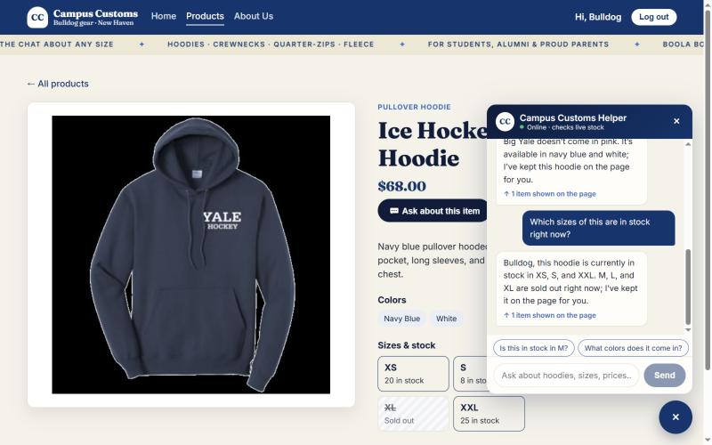
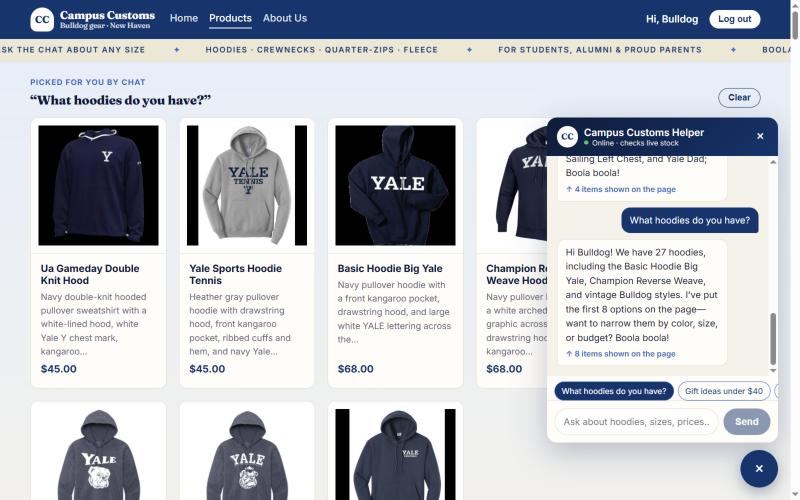
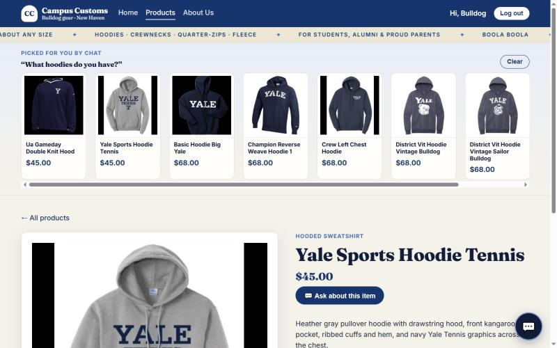
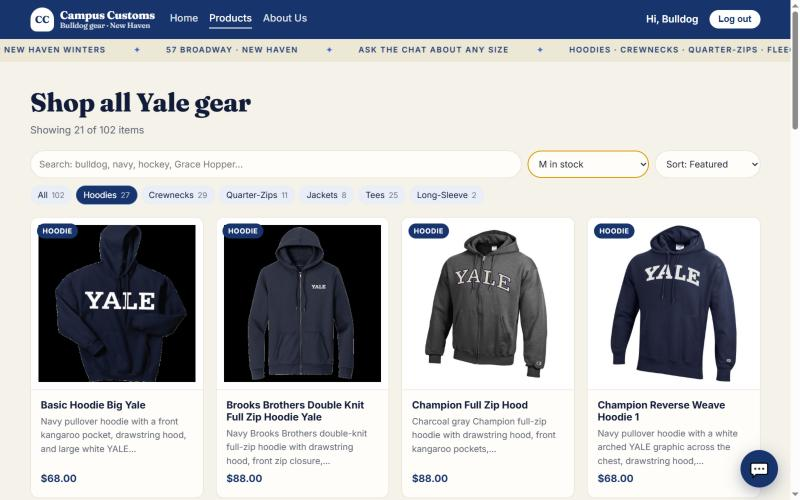
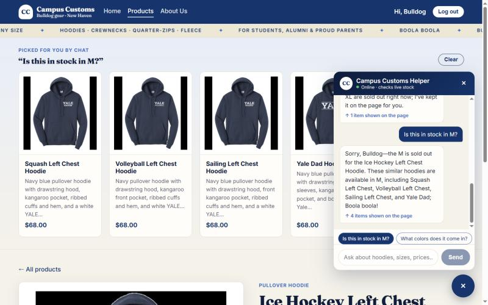

1. Chat checks the inventory level of an item
Problem 6Problem 8 page contextProblem 9 "Ask about this item"
On the Ice Hockey Left Chest Hoodie page I clicked Ask about this item ("Which sizes of this are in stock right now?"). The agent knew "this" meant the hoodie on screen (page context), called check_stock, and answered: "in stock in XS, S, and XXL. M, L, and XL are sold out right now."
Database truth (inventory and catalogue tables):
| Size | XS | S | M | L | XL | XXL | Price |
|---|---|---|---|---|---|---|---|
| Qty | 20 | 8 | 0 | 0 | 0 | 25 | $68.00 |
Proves: the stock answer matches the database exactly. All three sold-out sizes are named as sold out, and nothing is invented. The size tiles on the page (struck-through XL, "Sold out") show the same data.
2. Dynamic search-result cards appear after a category question
Problem 7
I asked "What hoodies do you have?" (via a chat starter chip). The agent called search_products(category="hoodie"), found 27 hoodies, and returned 8 product_ids. The backend built the cards from the database, and the site rendered them in the "Picked for you by chat" panel at the top of the page. The chat bubble notes "↑ 8 items shown on the page".
Proves: the API contract works end to end. The agent returns structured product matches, and the front end renders real cards with image, name, price ($45 / $68 from the DB), and a short description.
3. Chat cards still open the single-item page
Problem 7 Panel B
Clicking the Yale Sports Hoodie Tennis card from the chat panel opened /products/yale-sports-hoodie-tennis, the same single-item page from Problem 3 (large image, full description, price, colors, size stock). The chat picks stay above as a compact strip, so the shopper can jump to another one.
Proves: dynamically added cards behave exactly like catalogue cards.
4. Usability feature: product finder (search, category chips, size-in-stock, sort)
Problem 9 · front end #1
On /products I clicked the Hoodies chip (27) and chose "M in stock". The grid shows 21 of 102 items. The 6 hoodies whose M is sold out (Crew Left Chest, Ice Hockey Left Chest, The Forest School, Yale Grandma, Yale Sports Soccer, Yale Sports Swimming) are hidden, so the shopper only sees what they can actually buy.
Proves: the finder from usability.md is live. Category chips use the normalized category, and the size filter uses real per-size stock.
5. Bonus: sold-out size → in-stock alternatives
Problem 9 · agent #1find_alternativesProblem 9 · front end #2 starter chips

Still on the Ice Hockey hoodie page, I tapped the starter chip "Is this in stock in M?". The agent said M is sold out, then called find_alternatives(product, "M") and put 4 similar hoodies that have M in stock on the page. DB check for size M: Squash 5, Volleyball 2, Sailing 25, Yale Dad 12, all $68.00.
Proves: no dead ends. A sold-out answer comes with real, in-stock options, and every price shown passed the price guard.